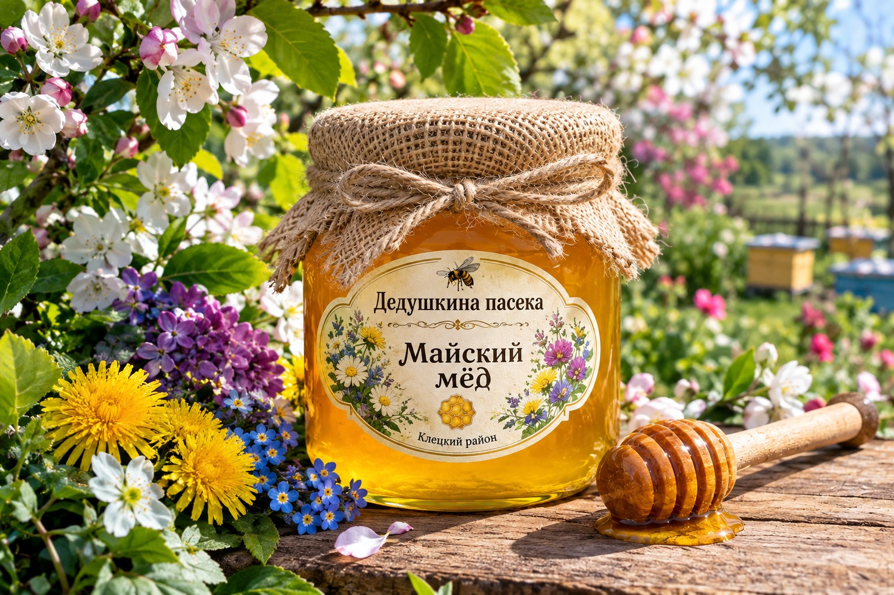

Натуральный майский мёд, собранный в период весеннего цветения. Оттенок, аромат и вкус зависят от состава медоносов и условий конкретного сезона.
Мёд раннего весеннего сбора с естественным ароматом цветущих садов и других майских медоносов. Природные характеристики могут различаться от года к году.